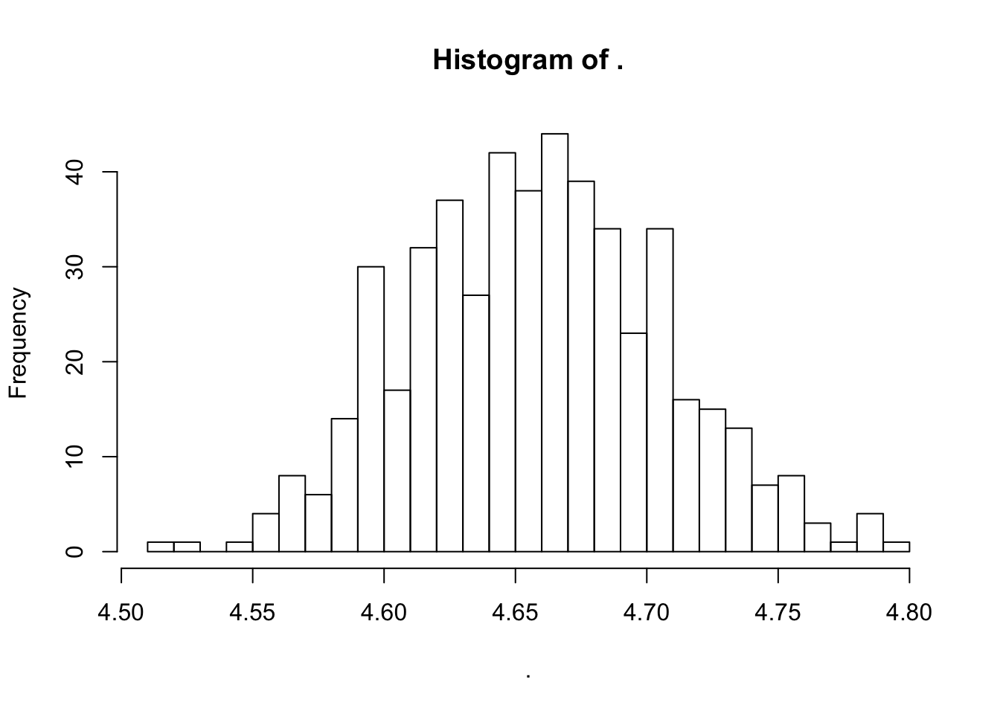
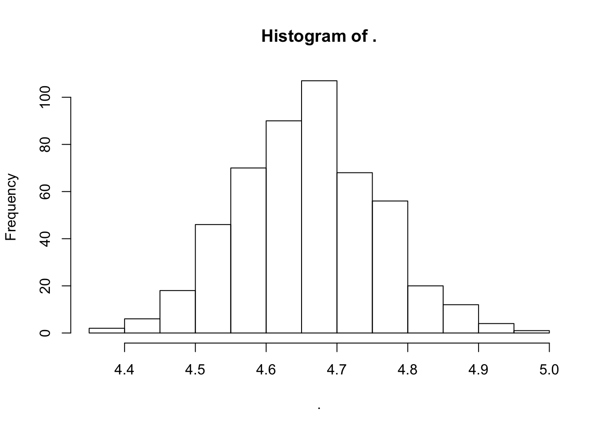

knitr::opts_chunk$set(echo = TRUE)
library(tidyverse)## ── Attaching packages ───────────────────────── tidyverse 1.2.1 ──## ✔ ggplot2 3.0.0 ✔ purrr 0.2.5
## ✔ tibble 1.4.2 ✔ dplyr 0.7.5
## ✔ tidyr 0.8.1 ✔ stringr 1.3.1
## ✔ readr 1.1.1 ✔ forcats 0.3.0## ── Conflicts ──────────────────────────── tidyverse_conflicts() ──
## ✖ dplyr::filter() masks stats::filter()
## ✖ dplyr::lag() masks stats::lag()set.seed(101991)When our parameter of interest can be written as an expectation, we can use the CLT to guide us in quantifying the variance in our estimate.
But sometimes this might not be enough if:
We could use simulation to estimate it…
One estimate of the required expectation:
num_sims <- 1000
many_sequences <- rerun(num_sims,
rbinom(20, size = 1, prob = 0.5))
longest_runs <- map_dbl(many_sequences,
~ max(rle(.)$lengths))
mean(longest_runs)## [1] 4.657Another…
many_sequences <- rerun(num_sims,
rbinom(20, size = 1, prob = 0.5))
longest_runs <- map_dbl(many_sequences,
~ max(rle(.)$lengths))
mean(longest_runs)## [1] 4.662But…really we want to automate this.
mean(longest_runs)flatten_dbl())The first step is now simulating a complicated thing, so wrap it up into a function:
mc_estimate_run_length <- function(num_sims){
# estimate the expected maximum run of H or T
# in 20 coin flips by monte carlo
many_sequences <- rerun(num_sims,
rbinom(20, size = 1, prob = 0.5))
longest_runs <- map_dbl(many_sequences,
~ max(rle(.)$lengths))
mean(longest_runs)
}
mc_estimate_run_length(1000)## [1] 4.608many_estimates <- rerun(500, mc_estimate_run_length(num_sims = 1000))
many_estimates_flat <- many_estimates %>% flatten_dbl()
many_estimates_flat %>% hist(breaks = 20)
sd(many_estimates_flat)## [1] 0.04846478sd(longest_runs)/sqrt(1000)## [1] 0.04835384Compares well to our estimate that relied on the CLT (it should, the CLT should be pretty good for \(n = 1000\))
many_estimates %>% flatten_dbl() %>% sd(na.rm = TRUE) ## [1] 0.04846478sd(flatten_dbl(many_estimates), na.rm = TRUE)## [1] 0.04846478Estimate the standard deviation of our MC based estimate, when we simulate just 250 coin toss sequences in each simulation.
many_estimates <- rerun(500, mc_estimate_run_length(num_sims = 250))
many_estimates_flat <- many_estimates %>% flatten_dbl()
many_estimates_flat %>% hist(breaks = 20)
sd(many_estimates_flat)## [1] 0.09933127Does you answer agree with what the CLT might predict?
Back at 8:55am
Lot’s of sample sizes floating around:
(that’s 10 million coin flips total)
An collection of techniques designed to decrease the variance of our simulation based estimate.
I.e. we can get just as good an estimate with many fewer simulations.
Setting:
We want to estimate: \[ \theta = \text{E}\left( h(X)\right) \]
We do this by:
Sampling \(X_1, \ldots, X_n\) i.i.d from distribution \(F_X\).
Calculating \(h(X_1), \ldots, h(X_n)\).
Finding the sample mean of the \(h(X_i)\), i.e. \[ \hat{\theta} = \frac{1}{n}\sum_{i = 1}^n h(X_i) \]
Idea:
Instead of generating \(X_i\) independently, generate them in pairs, use the sample average of the pair averages.
Intuition:
The average of a pair of simulated values, \[ \text{Var} \left(\frac{1}{2} \left(X_1 + X_2\right) \right)= \frac{1}{4} \left( \text{Var}(X_1) + \text{Var}(X_2) + 2 \text{Cov}(X_1, X_2) \right) \] will be smaller than the average of two independently simulated values, if \(X_1\) and \(X_2\) are negatively correlated, i.e. \(\text{Cov}(X_1, X_2) < 0\).
But really…
We actually we are interested in: \[ \text{Var}\left(\frac{1}{2} \left(h(X_1) + h(X_2)\right) \right ) \]
It can be shown if \(h\) is monotonic that above relationship still holds: this variance will be less than the average of two independently simulated values, as long as \(X_1\) and \(X_2\) are negatively correlated.
Let \(X \sim\) Uniform(0, 1). What is \(\text{E}\left(e^x\right)\)?
(We could answer this with calculus quite easily…but it’s a nice example to work with)
The naive MC approach:
n_sims <- 500
many_x <- runif(n_sims)
exp_many_x <- exp(many_x)
mean(exp_many_x) # our estimate of E(e^x)## [1] 1.731394# rough CI half-width on this estimate
(naive_ci_halfwidth <- 1.96*sd(exp_many_x)/sqrt(n_sims))## [1] 0.04364225(Don’t need rerun() here, it’s easy to get many samples from a Uniform)
\(h(X) = e^x\) is monotone in \(x\).
So, we should be able to reduce variance by generating pairs of negatively correlated draws from a Uniform(0, 1).
One set of pairs: \((X, 1-X)\) where \(X \sim\) Uniform(0, 1)
Both \(X\) and \(1-X\) have the right distribution and are negatively correlated.
x_first_in_pair <- runif(n_sims/2) # need half as many draws
x_second_in_pair <- 1 - x_first_in_pair
# a useful function in this example
pair_average <- function(x1, x2){
1/2 * (x1 + x2)
}
pair_averages <- pair_average(x1 = exp(x_first_in_pair),
x2 = exp(x_second_in_pair))
mean(pair_averages) # our estimate of E(e^x)## [1] 1.719627# rough CI half-width on this estimate
(antithetic_ci_half_width <- 1.96*sd(pair_averages)/sqrt(n_sims/2))## [1] 0.0081728985 times smaller!
Wilson G, Bryan J, Cranston K, Kitzes J, Nederbragt L, et al. (2017) Good enough practices in scientific computing. PLOS Computational Biology 13(6): e1005510. https://doi.org/10.1371/journal.pcbi.1005510
a minimum set of tools and techniques that we believe every researcher can and should consider adopting.
Read the Author summary, Overview, Introduction and Software sections.
You may also want to review some things we touched on in class about functions in R: